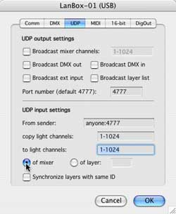

LCedit+ v3.3 tutorial, chapter 8: UDP networking usage
| |
LCedit+ v3.3 tutorial, chapter 8: UDP networking usage |
|
|
| Introduction
The LanBox-LCX and LCE have several options to use the UDP protocol on an Ethernet network. UDP is a fast internet protocol which makes it very suitable to transport bulk data (e.g. DMX) between devices. Besides (DMX) data transport UDP can also be used to synchronize layers of multiple boxes, and can be picked up by 3D visualization software like Capture. With MAX-MSP you can even receive, besides all DMX data, the analog inputs and transmit DMX data directly to a LanBox-LCX or LCE.
Usage of the UDP options with Capture 3D. Capture is delivered with a so called LanBox DLL provider which supports up to 6 universes. The LanBox(es), LCedit, and Capture must be connected to a local ethernet network. In order to use Capture you only need to activate the LanBox DLL in Capture, turn on broadcast mixer channels in the LanBox with LCedit+, and you will see your show visualized real-time. If you set the broadcast range of a LCX to 1-3072, you can use all 6 universes in Capture. Usage of the UDP options with MAX-MSP. With MAX-MSP (with optional Jitter), you can create near anything based on lighting, sound, MIDI and video. In the developer folder of LCedit+ you find several examples how to communicate with a LanBox. In order to receive the different LanBox broadcast types into MAX use the UDP rx example. Be aware that DMX-input data will only be broadcasted when you have set the DMX input range (DMX tab of global settings), to a valid range. Transmitting DMX data directly to a LanBox is possible in two ways: broadcasting (like a LanBox), or point to point. The UDP input setting of a LanBox "anyone:4777" allows receiving from any other IP, including broadcasts, but by assigning an IP to the "from sender" it will listen only for packets from that IP.
DMX distribution over an Ethernet network. DMX-512 supports, as the name indicates, up to 512 channels. If you need more channels you could already use multiple LanBoxes, but each with it's own cues. From firmware v2.x the LanBox-LCX supports 3072 light channels, and also the distribution of those channels via UDP on Ethernet. This means that you can built a lighting system with up to 3072 channels, distributed over multiple so called universes. A universe is one DMX cable (one LanBox) with up to 512 DMX channels. Let's assume we have a LanBox-LCX and we want to create a second universe with a LanBox-LCE, in order to get 1024 DMX channels. First of all be sure the boxes have unique IP addresses and names on the network (see also the new LanBox user manual, page 16 network setup). Create in LCedit+ two interfaces, one for each box. Open the Interfaces window, and check that your current interface has a decent name (like box 1). Now apply the New Interface command from the Edit menu, you will get a new Configure interface dialog; choose box 2 (universe 2) as connection. All fixtures on the stage should be connected to interface 1 (box 1 , the LCX), but you must place a dummy dimmer on the first channel of each next box. So place it on channel 513, use the patch tab to set it to DMX address 1, choose box 2 as interface, and name it U2. We needs this pseudo fixture in order to have access to the post processing of universe 2 (box 2, the LCE). Now select a fixture on the stage, so box 1 is selected, and go to Global settings the UDP tab (see picture right). Turn on broadcasting of mixer channels 1-1024.
Next thing to do is setting up universe 2 (box 2, LCE). In order to do so you must select U2 (that's why it's needed ;-), and go to global settings. Check that the title of global settings indicates interface 2 (box 2), and set UDP input settings to copy 1-1024 to light channels 1-1024. Actually you only need to copy 513-1024 to 1-512, but shifting channels can become very confusing, so we do it the simple way again. This way the mixer of the LCE is always a copy of what is going on in the LCX. This means however that we must patch light channel 513-1024 to DMX 1-512 in this universe 2 box, but that is easy. While the U2 fixture is still selected, open the Patch editor. Now select the first through the last row (1-512), click on the I button (for auto increment), and enter 513 into the set field. After return DMX channel 1-512 is now patched to light channel 513-1024 (see picture right). From now on you only work in the LanBox-LCX, which means add fixtures on the stage, and create cues. Be aware that a fixture can not be separated into two universes (duh), so it's useful to make a planning where all fixtures should go (on what universe). Note: Once fixtures are placed above light channel 512, they have a blank DMX address in the fixture setup and in the cast. The reason is that those channels are processed in other boxes, and the LCX (the master) has no idea how they are setup or patched. Note: As you can see on the pictures, the UDP panel of global settings has many more settings. These settings are outside the scoop of this tutorial, but it's enough to know that we also provided high speed bulk data communication using UDP which can be used by programs like MAX. As you can image, setups with multiple universes can become quite complex, but with proper planning (which is a must for all large setups) you can have a large (up to 3072 channels, 6 universes) system with a fraction of the cost of a lighting desk for 6 universes. As Ethernet cabling is widely available it's also easier to setup and maintain, and cheaper then DMX cabling with repeaters and splitters.
Synchronizing cues in multiple LanBoxes.
When you want to store many large scenes, you will face that there is a limit on memory space in a LanBox :-) This happens mostly when you have thousands of steps for large RGB pixel arrays, which must run stand-alone. A solution is to split the scenes and distribute them on several LanBoxes which all run a part of the total scene. The only problem with this solution is that you need to be able to keep the cues of the boxes in sync with each other, but could be solved by using MIDI. From firmware v2.05 and LCedit+ v3.3 it's now also possible to keep layers of "slave" LanBoxes running in sync with a "master" LanBox via Ethernet. Just turn on "Broadcast layer list" in the master box, and turn on "Synchronize layers with same ID" in the slaves. If the master has e.g. layers A, B, C, it will keep layers A, B and C of all slaves in sync with the master.
Network traffic When you setup a LanBox-LCX to UDP broadcast 3072 channels it generates quite a lot of traffic on your local network (near 1 Mega bit per second for 3072 channels). If you have a stand-alone network just for lighting, it's no problem, but if the network is part of an existing network, it's a good idea to contact the network manager. ;-) This concludes the LCedit+ tutorial. You have learned a lot, and we are sure you can use LCedit+ basically, but there will be still many application specific questions to answer. In that case send us an email, or better join the LanBox Talk email discussions, and as always start looking at our support pages. Have fun with your box and LCedit+.
|
|
Connect | Stage | Control | Cues | Show | Fixtures | Keys | UDP
|
|
|
|
| Last updated: 20-04-2005 by: Fokko |
Copyright 1995..2005 CDS advanced technology bv. LanBox is a registered trademark of CDS advanced technology bv. All other names referenced are the service marks, trademarks or registered trademarks of their respective companies. Comments, suggestions, questions and info: www.lanbox.com |
|
|
|